Show the code
pacman::p_load(igraph, tidygraph, ggraph,
visNetwork, lubridate, clock,
tidyverse, graphlayouts,
concaveman, ggforce)In this hands-on exercise, I learned how to model, analyse and visualise network data using R.
By the end of this hands-on exercise, I was able to:
I loaded four network data modelling and visualisation packages: igraph, tidygraph, ggraph and visNetwork. Beside these four packages, tidyverse and lubridate, an R package specially designed to handle and wrangle time data, were also loaded. Additionally, graphlayouts, concaveman and ggforce were included to support advanced graph visualisation.
pacman::p_load(igraph, tidygraph, ggraph,
visNetwork, lubridate, clock,
tidyverse, graphlayouts,
concaveman, ggforce)The data sets used in this hands-on exercise are from an oil exploration and extraction company. There are two data sets. One contains the nodes data and the other contains the edges (also known as link) data.
GAStech-email_edges.csv consists of two weeks of 9063 email correspondences between 55 employees.
GAStech_email_nodes.csv consists of the names, department and title of the 55 employees.
I imported GAStech_email_node.csv and GAStech_email_edges-v2.csv into the RStudio environment using read_csv() of the readr package.
GAStech_nodes <- read_csv("data/GAStech_email_node.csv")
GAStech_edges <- read_csv("data/GAStech_email_edge-v2.csv")I examined the structure of the data frame using glimpse() of dplyr.
glimpse(GAStech_edges)Rows: 9,063
Columns: 8
$ source <dbl> 43, 43, 44, 44, 44, 44, 44, 44, 44, 44, 44, 44, 26, 26, 26…
$ target <dbl> 41, 40, 51, 52, 53, 45, 44, 46, 48, 49, 47, 54, 27, 28, 29…
$ SentDate <chr> "6/1/2014", "6/1/2014", "6/1/2014", "6/1/2014", "6/1/2014"…
$ SentTime <time> 08:39:00, 08:39:00, 08:58:00, 08:58:00, 08:58:00, 08:58:0…
$ Subject <chr> "GT-SeismicProcessorPro Bug Report", "GT-SeismicProcessorP…
$ MainSubject <chr> "Work related", "Work related", "Work related", "Work rela…
$ sourceLabel <chr> "Sven.Flecha", "Sven.Flecha", "Kanon.Herrero", "Kanon.Herr…
$ targetLabel <chr> "Isak.Baza", "Lucas.Alcazar", "Felix.Resumir", "Hideki.Coc…The output report of GAStech_edges above reveals that the SentDate is treated as “Character” data type instead of date data type. This is an error! Before continuing, it is important to change the data type of SentDate field back to “Date” data type.
I used the code chunk below to perform the date type conversion.
GAStech_edges <- GAStech_edges %>%
mutate(SendDate = dmy(SentDate)) %>%
mutate(Weekday = wday(SentDate,
label = TRUE,
abbr = FALSE))abbr = FALSE keeps the day spelled in full, i.e. Monday. The function creates a new column Weekday in the data frame.The table below shows the data structure of the reformatted GAStech_edges data frame.
Rows: 9,063
Columns: 10
$ source <dbl> 43, 43, 44, 44, 44, 44, 44, 44, 44, 44, 44, 44, 26, 26, 26…
$ target <dbl> 41, 40, 51, 52, 53, 45, 44, 46, 48, 49, 47, 54, 27, 28, 29…
$ SentDate <chr> "6/1/2014", "6/1/2014", "6/1/2014", "6/1/2014", "6/1/2014"…
$ SentTime <time> 08:39:00, 08:39:00, 08:58:00, 08:58:00, 08:58:00, 08:58:0…
$ Subject <chr> "GT-SeismicProcessorPro Bug Report", "GT-SeismicProcessorP…
$ MainSubject <chr> "Work related", "Work related", "Work related", "Work rela…
$ sourceLabel <chr> "Sven.Flecha", "Sven.Flecha", "Kanon.Herrero", "Kanon.Herr…
$ targetLabel <chr> "Isak.Baza", "Lucas.Alcazar", "Felix.Resumir", "Hideki.Coc…
$ SendDate <date> 2014-01-06, 2014-01-06, 2014-01-06, 2014-01-06, 2014-01-0…
$ Weekday <ord> Friday, Friday, Friday, Friday, Friday, Friday, Friday, Fr…A close examination of GAStech_edges data frame reveals that it consists of individual e-mail flow records. This is not very useful for visualisation.
In view of this, I aggregated the individual records by date, senders, receivers, main subject and day of the week.
GAStech_edges_aggregated <- GAStech_edges %>%
filter(MainSubject == "Work related") %>%
group_by(source, target, Weekday) %>%
summarise(Weight = n()) %>%
filter(source!=target) %>%
filter(Weight > 1) %>%
ungroup()The table below shows the data structure of the reformatted GAStech_edges_aggregated data frame.
Rows: 1,372
Columns: 4
$ source <dbl> 1, 1, 1, 1, 1, 1, 1, 1, 1, 1, 1, 1, 1, 1, 1, 1, 1, 1, 1, 1, 1,…
$ target <dbl> 2, 2, 2, 2, 2, 3, 3, 3, 3, 3, 4, 4, 4, 4, 4, 5, 5, 5, 5, 5, 6,…
$ Weekday <ord> Sunday, Monday, Tuesday, Wednesday, Friday, Sunday, Monday, Tu…
$ Weight <int> 5, 2, 3, 4, 6, 5, 2, 3, 4, 6, 5, 2, 3, 4, 6, 5, 2, 3, 4, 6, 5,…In this section, I learned how to create a graph data model using the tidygraph package. It provides a tidy API for graph/network manipulation. While network data itself is not tidy, it can be envisioned as two tidy tables — one for node data and one for edge data. tidygraph provides a way to switch between the two tables and exposes dplyr verbs for manipulating them, as well as access to a wide range of graph algorithms.
Two functions of tidygraph package can be used to create network objects:
tbl_graph() creates a tbl_graph network object from nodes and edges data.
as_tbl_graph() converts network data and objects to a tbl_graph network.
The activate() verb from tidygraph serves as a switch between tibbles for nodes and edges. All dplyr verbs applied to a tbl_graph object are applied to the active tibble.
tbl_graph() to build a tidygraph data modelI used tbl_graph() of the tidygraph package to build a tidygraph network graph data frame.
GAStech_graph <- tbl_graph(nodes = GAStech_nodes,
edges = GAStech_edges_aggregated,
directed = TRUE)GAStech_graph# A tbl_graph: 54 nodes and 1372 edges
#
# A directed multigraph with 1 component
#
# Node Data: 54 × 4 (active)
id label Department Title
<dbl> <chr> <chr> <chr>
1 1 Mat.Bramar Administration Assistant to CEO
2 2 Anda.Ribera Administration Assistant to CFO
3 3 Rachel.Pantanal Administration Assistant to CIO
4 4 Linda.Lagos Administration Assistant to COO
5 5 Ruscella.Mies.Haber Administration Assistant to Engineering Group Mana…
6 6 Carla.Forluniau Administration Assistant to IT Group Manager
7 7 Cornelia.Lais Administration Assistant to Security Group Manager
8 44 Kanon.Herrero Security Badging Office
9 45 Varja.Lagos Security Badging Office
10 46 Stenig.Fusil Security Building Control
# ℹ 44 more rows
#
# Edge Data: 1,372 × 4
from to Weekday Weight
<int> <int> <ord> <int>
1 1 2 Sunday 5
2 1 2 Monday 2
3 1 2 Tuesday 3
# ℹ 1,369 more rowsThe output above reveals that GAStech_graph is a tbl_graph object with 54 nodes and 4541 edges. It prints the first six rows of “Node Data” and the first three rows of “Edge Data”. The Node Data is shown as active by default.
The nodes tibble data frame is activated by default, but I can change which tibble is active with the activate() function. For example, to rearrange rows in the edges tibble to list those with the highest “weight” first:
GAStech_graph %>%
activate(edges) %>%
arrange(desc(Weight))ggraph is an extension of ggplot2, making it easier to carry over basic ggplot skills to the design of network graphs.
There are three main aspects to a ggraph network graph:
I used ggraph(), geom_edge_link() and geom_node_point() to plot a basic network graph using GAStech_graph.
ggraph(GAStech_graph) +
geom_edge_link() +
geom_node_point()
ggraph(), which takes the data to be used for the graph and the type of layout desired. Both arguments for ggraph() are built around igraph. Therefore, ggraph() can use either an igraph object or a tbl_graph object.I used theme_graph() to remove the x and y axes.
g <- ggraph(GAStech_graph) +
geom_edge_link(aes()) +
geom_node_point(aes())
g + theme_graph()
theme_graph() removes axes, grids, and borders, and changes the font to Arial Narrow.set_graph_style() run before the plots, or by using theme_graph() in each individual plot.theme_graph() also makes it easy to change the coloring of the plot.
g <- ggraph(GAStech_graph) +
geom_edge_link(aes(colour = 'grey50')) +
geom_node_point(aes(colour = 'grey40'))
g + theme_graph(background = 'grey10',
text_colour = 'white')
I plotted the network graph using the Fruchterman and Reingold layout by specifying layout = "fr".
g <- ggraph(GAStech_graph,
layout = "fr") +
geom_edge_link(aes()) +
geom_node_point(aes())
g + theme_graph()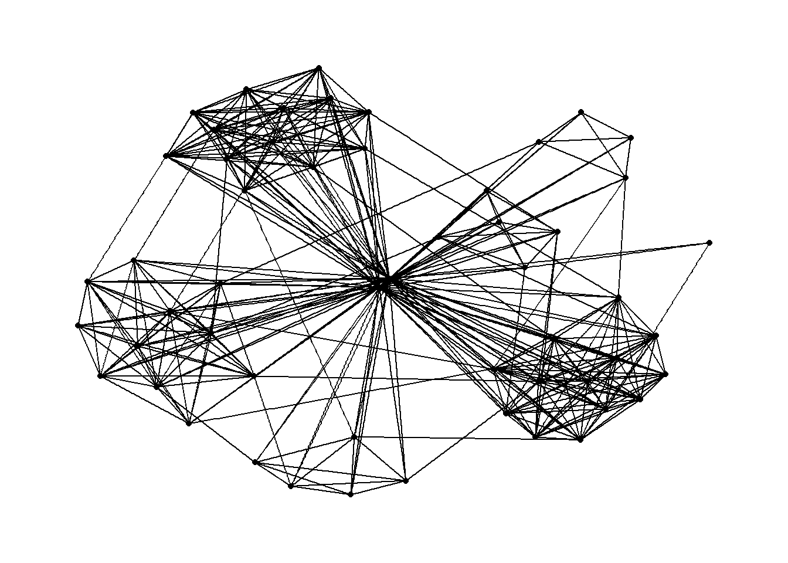
I coloured each node by its respective department using the colour aesthetic in geom_node_point().
g <- ggraph(GAStech_graph,
layout = "nicely") +
geom_edge_link(aes()) +
geom_node_point(aes(colour = Department,
size = 3))
g + theme_graph()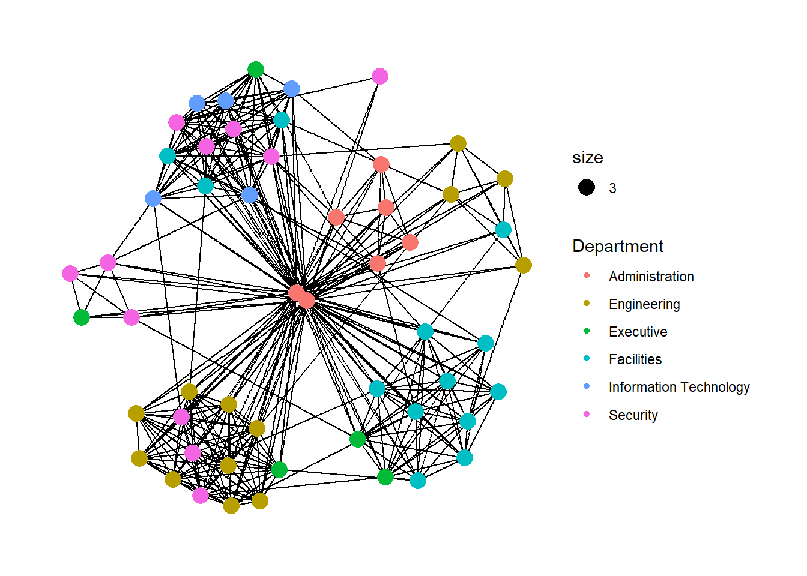
I mapped the thickness of the edges to the Weight variable using the width aesthetic in geom_edge_link().
g <- ggraph(GAStech_graph,
layout = "nicely") +
geom_edge_link(aes(width=Weight),
alpha=0.2) +
scale_edge_width(range = c(0.1, 5)) +
geom_node_point(aes(colour = Department),
size = 3)
g + theme_graph()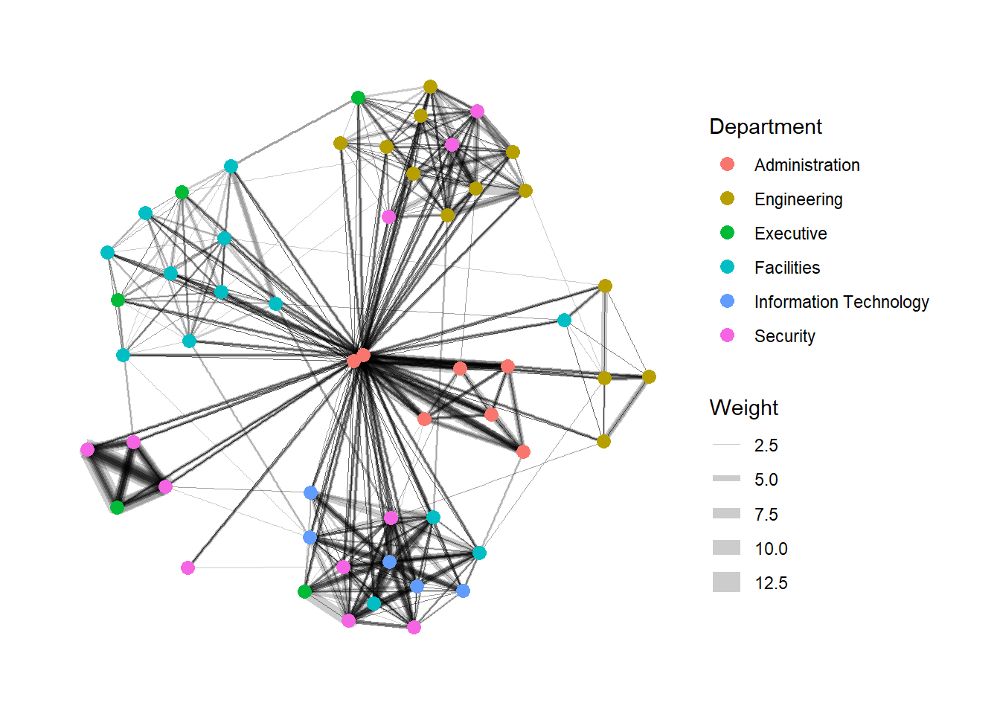
width argument maps line width proportionally to the Weight attribute, and alpha introduces opacity to the lines.Another very useful feature of ggraph is faceting. In visualising network data, this technique can reduce edge over-plotting by spreading nodes and edges out based on their attributes.
There are three functions in ggraph to implement faceting:
I used facet_edges() to split the network by weekday.
set_graph_style()
g <- ggraph(GAStech_graph,
layout = "nicely") +
geom_edge_link(aes(width=Weight),
alpha=0.2) +
scale_edge_width(range = c(0.1, 5)) +
geom_node_point(aes(colour = Department),
size = 2)
g + facet_edges(~Weekday)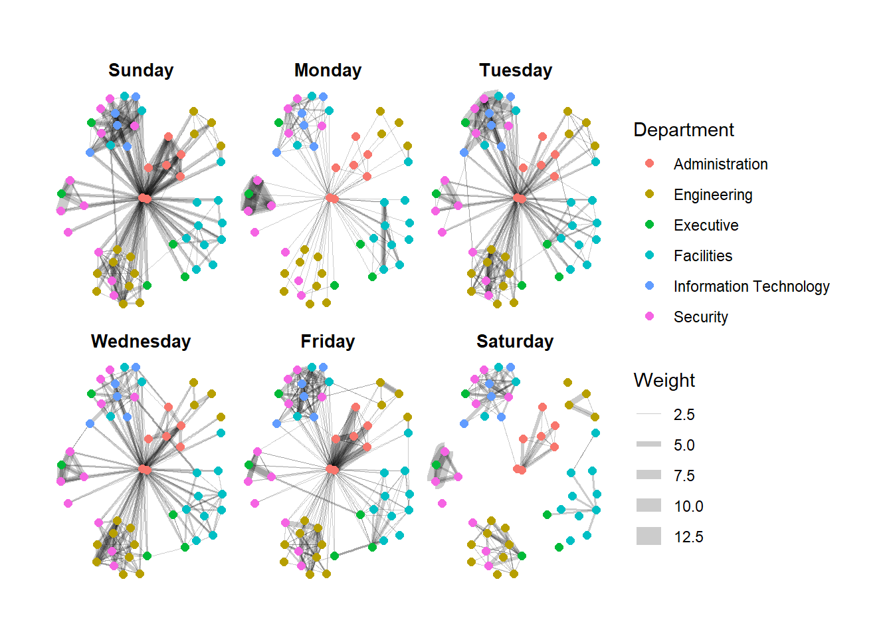
I then used theme() to move the legend to the bottom of the plot.
set_graph_style()
g <- ggraph(GAStech_graph,
layout = "nicely") +
geom_edge_link(aes(width=Weight),
alpha=0.2) +
scale_edge_width(range = c(0.1, 5)) +
geom_node_point(aes(colour = Department),
size = 2) +
theme(legend.position = 'bottom')
g + facet_edges(~Weekday)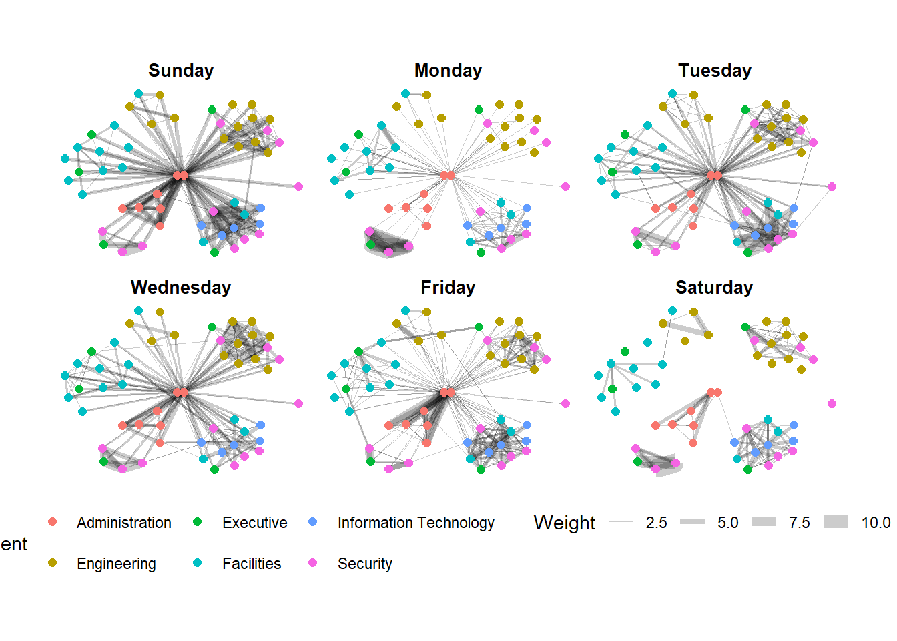
I added a frame to each facet panel using th_foreground().
set_graph_style()
g <- ggraph(GAStech_graph,
layout = "nicely") +
geom_edge_link(aes(width=Weight),
alpha=0.2) +
scale_edge_width(range = c(0.1, 5)) +
geom_node_point(aes(colour = Department),
size = 2)
g + facet_edges(~Weekday) +
th_foreground(foreground = "grey80",
border = TRUE) +
theme(legend.position = 'bottom')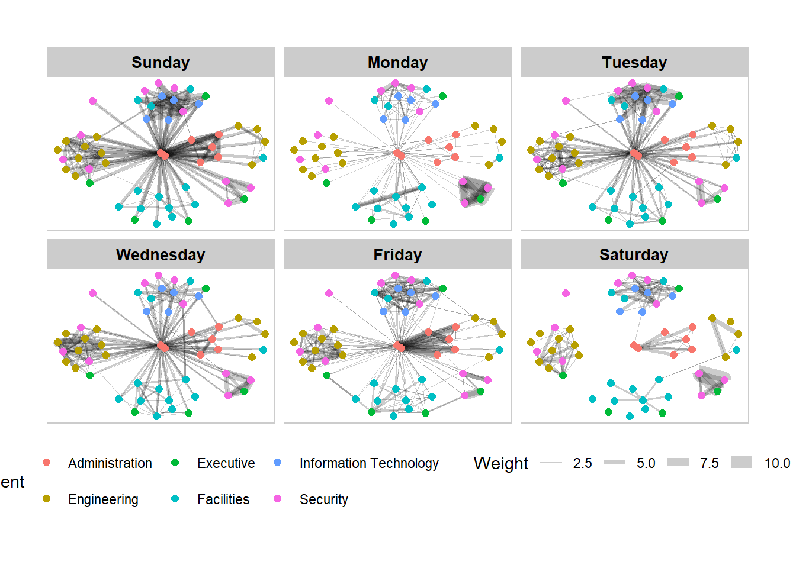
I used facet_nodes() to split the network by department.
set_graph_style()
g <- ggraph(GAStech_graph,
layout = "nicely") +
geom_edge_link(aes(width=Weight),
alpha=0.2) +
scale_edge_width(range = c(0.1, 5)) +
geom_node_point(aes(colour = Department),
size = 2)
g + facet_nodes(~Department)+
th_foreground(foreground = "grey80",
border = TRUE) +
theme(legend.position = 'bottom')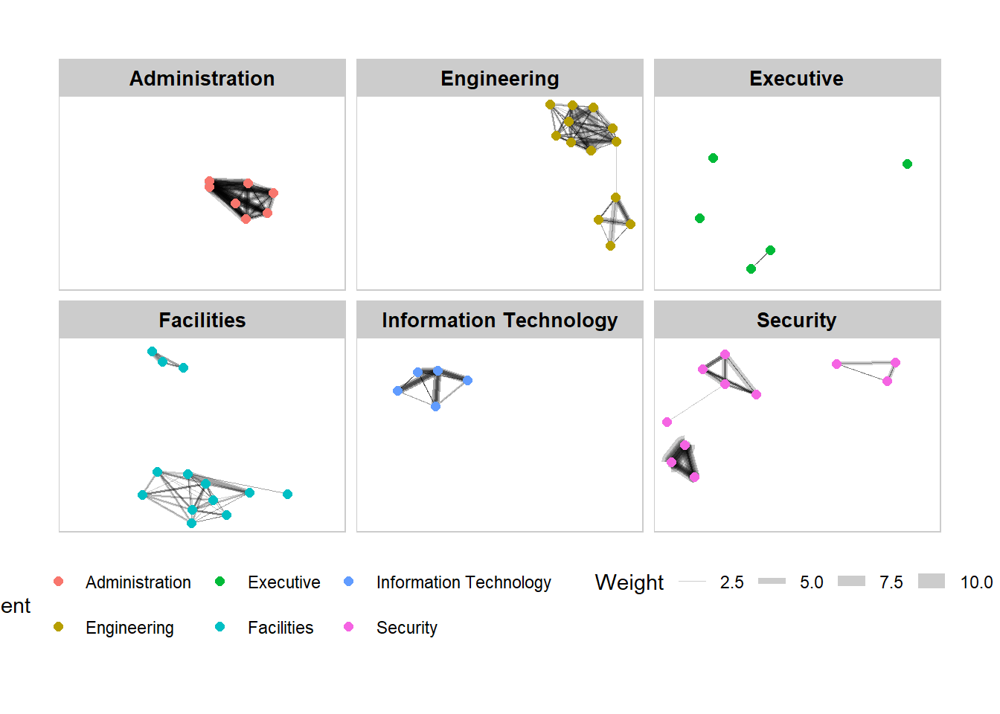
Centrality measures are a collection of statistical indices used to describe the relative importance of actors in a network. There are four well-known centrality measures: degree, betweenness, closeness and eigenvector.
I used centrality_betweenness() of tidygraph together with mutate() of dplyr to compute betweenness centrality and map node size accordingly.
g <- GAStech_graph %>%
mutate(betweenness_centrality = centrality_betweenness()) %>%
ggraph(layout = "fr") +
geom_edge_link(aes(width=Weight),
alpha=0.2) +
scale_edge_width(range = c(0.1, 5)) +
geom_node_point(aes(colour = Department,
size=betweenness_centrality))
g + theme_graph()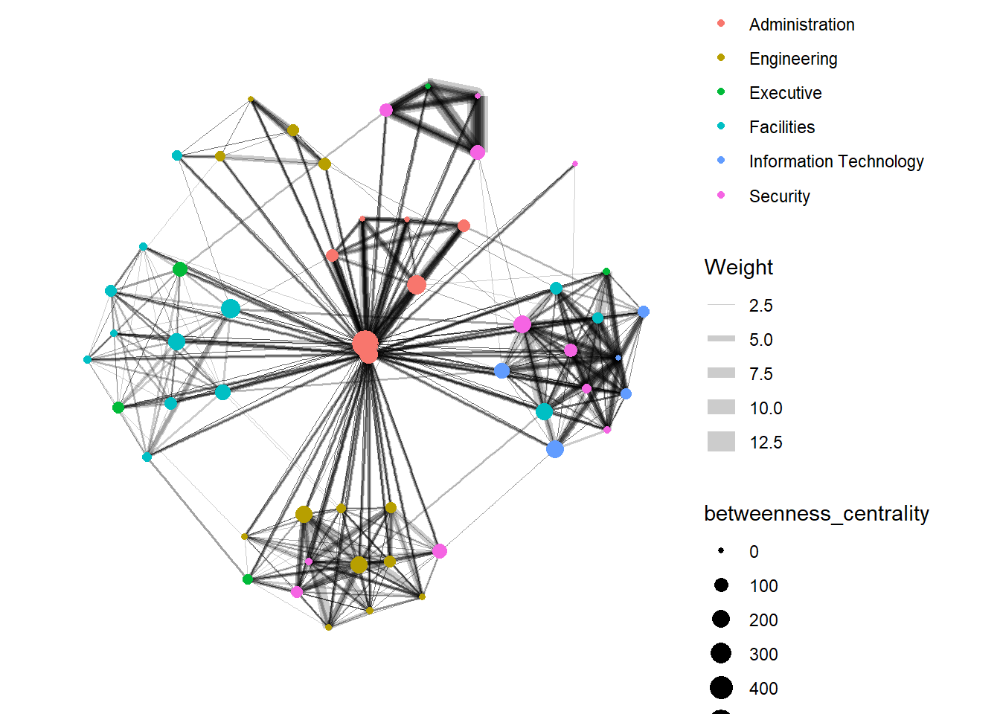
From ggraph v2.0 onward, tidygraph algorithms such as centrality measures can be accessed directly in ggraph calls, without needing to precompute and store them.
g <- GAStech_graph %>%
ggraph(layout = "fr") +
geom_edge_link(aes(width=Weight),
alpha=0.2) +
scale_edge_width(range = c(0.1, 5)) +
geom_node_point(aes(colour = Department,
size = centrality_betweenness()))
g + theme_graph()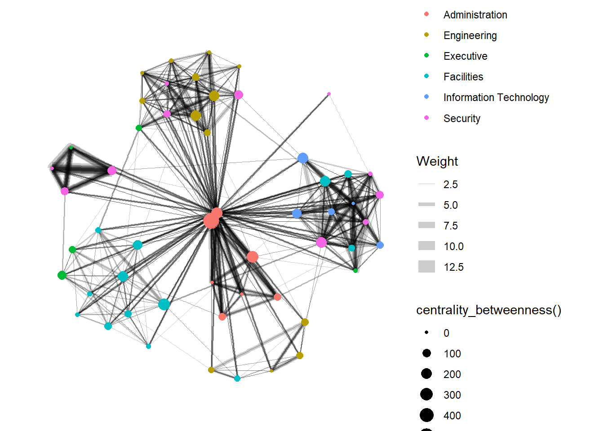
tidygraph inherits many community detection algorithms from igraph, including Edge-betweenness, Leading eigenvector, Fast-greedy, Louvain, Walktrap, Label propagation, InfoMAP, Spinglass, and Optimal.
I used group_edge_betweenness() below to detect communities and colour the nodes accordingly.
g <- GAStech_graph %>%
mutate(community = as.factor(
group_edge_betweenness(
weights = Weight,
directed = TRUE))) %>%
ggraph(layout = "fr") +
geom_edge_link(
aes(
width=Weight),
alpha=0.2) +
scale_edge_width(
range = c(0.1, 5)) +
geom_node_point(
aes(colour = community))
g + theme_graph()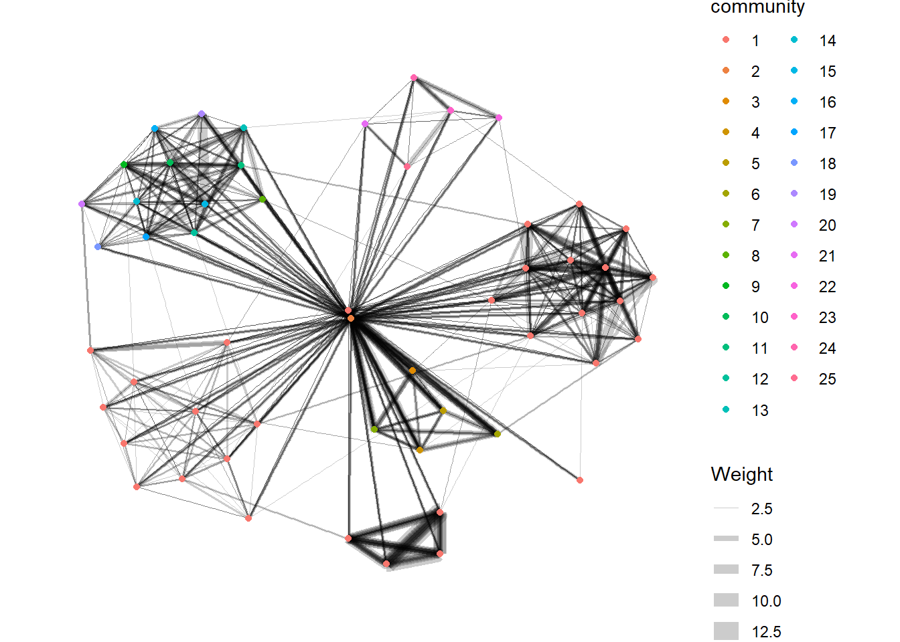
To support more effective visual investigation, I revised the community network using geom_mark_hull() from the ggforce package to draw convex hulls around each community group.
g <- GAStech_graph %>%
activate(nodes) %>%
mutate(community = as.factor(
group_optimal(weights = Weight)),
betweenness_measure = centrality_betweenness()) %>%
ggraph(layout = "fr") +
geom_mark_hull(
aes(x, y,
group = community,
fill = community),
alpha = 0.2,
expand = unit(0.3, "cm"),
radius = unit(0.3, "cm")
) +
geom_edge_link(aes(width=Weight),
alpha=0.2) +
scale_edge_width(range = c(0.1, 5)) +
geom_node_point(aes(fill = Department,
size = betweenness_measure),
color = "black",
shape = 21)
g + theme_graph()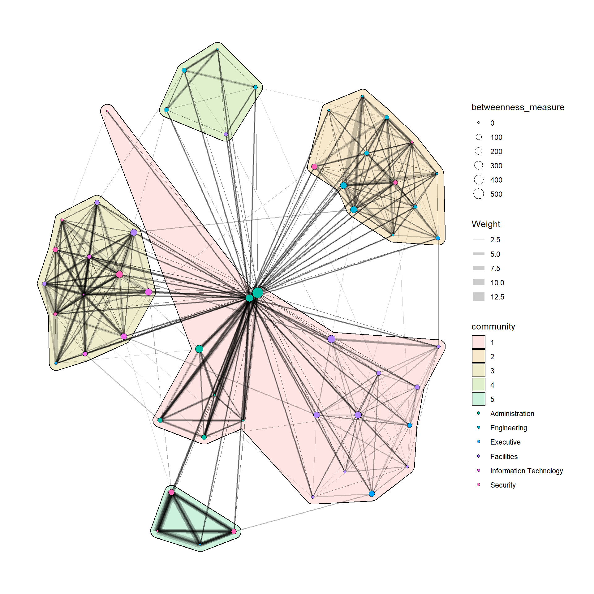
visNetwork() is an R package for network visualization using the vis.js javascript library.
visNetwork() uses a nodes list and edges list to create an interactive graph:
The resulting graph allows interactive exploration — nodes can be moved, and the graph can be zoomed and panned.
Before plotting the interactive network graph, I prepared the data model by joining the edges data with the nodes data to obtain numeric from and to IDs.
GAStech_edges_aggregated <- GAStech_edges %>%
left_join(GAStech_nodes, by = c("sourceLabel" = "label")) %>%
rename(from = id) %>%
left_join(GAStech_nodes, by = c("targetLabel" = "label")) %>%
rename(to = id) %>%
filter(MainSubject == "Work related") %>%
group_by(from, to) %>%
summarise(weight = n()) %>%
filter(from!=to) %>%
filter(weight > 1) %>%
ungroup()visNetwork(GAStech_nodes,
GAStech_edges_aggregated)I applied the Fruchterman and Reingold layout using visIgraphLayout().
visNetwork(GAStech_nodes,
GAStech_edges_aggregated) %>%
visIgraphLayout(layout = "layout_with_fr")visNetwork() looks for a field called “group” in the nodes object and colours the nodes according to the values of that field. I renamed the Department field to group.
GAStech_nodes <- GAStech_nodes %>%
rename(group = Department)When I reran the code below, visNetwork shaded the nodes by assigning a unique colour to each category in the group field.
visNetwork(GAStech_nodes,
GAStech_edges_aggregated) %>%
visIgraphLayout(layout = "layout_with_fr") %>%
visLegend() %>%
visLayout(randomSeed = 123)I used visEdges() to symbolise the edges with directional arrows and smooth curves.
visNetwork(GAStech_nodes,
GAStech_edges_aggregated) %>%
visIgraphLayout(layout = "layout_with_fr") %>%
visEdges(arrows = "to",
smooth = list(enabled = TRUE,
type = "curvedCW")) %>%
visLegend() %>%
visLayout(randomSeed = 123)I used visOptions() to add interactive features to the visualisation:
highlightNearest = TRUE highlights neighbouring nodes when a node is clicked.nodesIdSelection = TRUE adds a dropdown selector for individual nodes.visNetwork(GAStech_nodes,
GAStech_edges_aggregated) %>%
visIgraphLayout(layout = "layout_with_fr") %>%
visOptions(highlightNearest = TRUE,
nodesIdSelection = TRUE) %>%
visLegend() %>%
visLayout(randomSeed = 123)